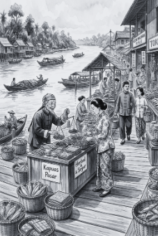
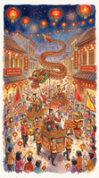
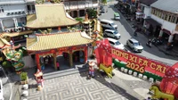
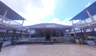

1 Cia Gwee
Tahun Baru Imlek
春節Perayaan lunar berisikan doa tolak bala, tradisi kumpul keluarga, dan pagelaran Barongsai di ruang publik Singkawang & Pontianak.
© 2026 TIDAYU Virtual Exhibition
Menyelami jejak panjang sejarah etnis, kekayaan warisan tradisi turun-temurun, serta kemegahan arsitektur khas Tionghoa yang membentuk identitas kultural di Kalimantan Barat.
Masyarakat Tionghoa di Kalimantan Barat berawal dari kedatangan para buruh tambang dan petani pada abad ke-17 dan ke-18 melalui jalur pelayaran Indocina dan Malaya menuju muara pesisir Kalimantan.
Para Sultan di Kalimantan Barat secara resmi mengundang migran asal Guangdong dan Fujian guna membuka sentra pertambangan emas pedalaman, yang melahirkan komunitas berbahasa dominan Hakka (Khek) dan Teochew di Singkawang dan Pontianak.
Aliansi perserikatan 14 kongsi tambang emas yang didirikan Lo Fang Pak dengan pusat otonomi di Mandor, bertahan selama 107 tahun sebagai tonggak penting tata kelola mandiri migran Tionghoa di nusantara.

Peta Jalur Perdagangan Emas, Struktur Republik Lanfang & Artefak Pemukiman Abad Ke-18.
Perayaan lunar berisikan doa tolak bala, tradisi kumpul keluarga, dan pagelaran Barongsai di ruang publik Singkawang & Pontianak.

Puncak hari ke-15 malam purnama. Kolaborasi magis Tatung Dayak-Tionghoa serta arak-arakan naga untuk mengusir roh jahat.

Ritual ziarah bukit makam leluhur (Cheng Beng) setiap bulan April, menjadi perwujudan lambang bakti generasi penerus.

Perayaan Tiong Chiu untuk mensyukuri panen musim gugur. Menjadi simbol reuni dan harmoni keluarga melalui kudapan kue bulan.
Filosofi tata letak Feng Shui dan detail ornamen mahakarya yang tersebar di wilayah pesisir Kalimantan Barat.
Kelenteng tertua di tepi muara Kapuas Pontianak yang didirikan sekitar tahun 1800-an. Memiliki lonceng perunggu kuno dan arsitektur gerbang klenteng klasik berornamen naga pelindung (Liong) yang mengarah tepat ke sungai sebagai pembawa rezeki.
.png)
Titik nol pusat spiritualitas Kota Singkawang. Merupakan episentrum sakral untuk pelepasan pawai naga (Liong) dan prosesi kebudayaan Cap Go Meh dengan gerbang megah ikonik perpaduan motif flora dan fauna surgawi.

Arsitektur rumah panggung besar tradisional *taibuk* seluas 5.000 m² yang didirikan saudagar Tjhia Hiap Seng sebagai kediaman keluarga sekaligus kantor dagang persinggahan kapal. Menampilkan tata letak pekarangan tertutup bergaya Tiongkok Selatan.

Kompleks peribadatan super megah seluas 6 hektar berlatar alam pegunungan Roban. Diresmikan pada tahun 2022, vihara ini menampilkan Pagoda Kembar setinggi puluhan meter yang dihiasi ribuan lampion dan ornamen naga raksasa.